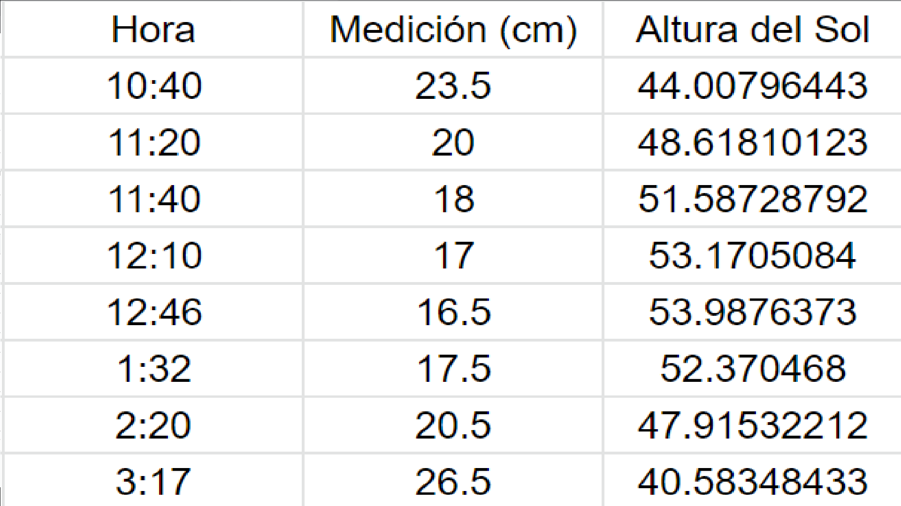
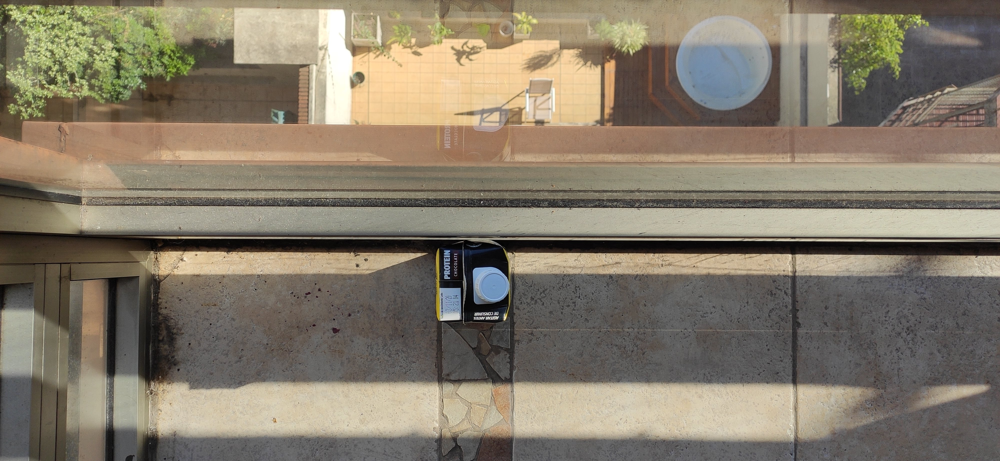
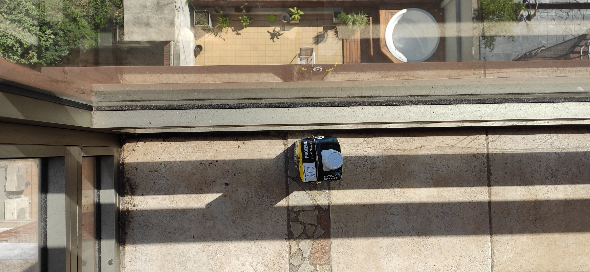
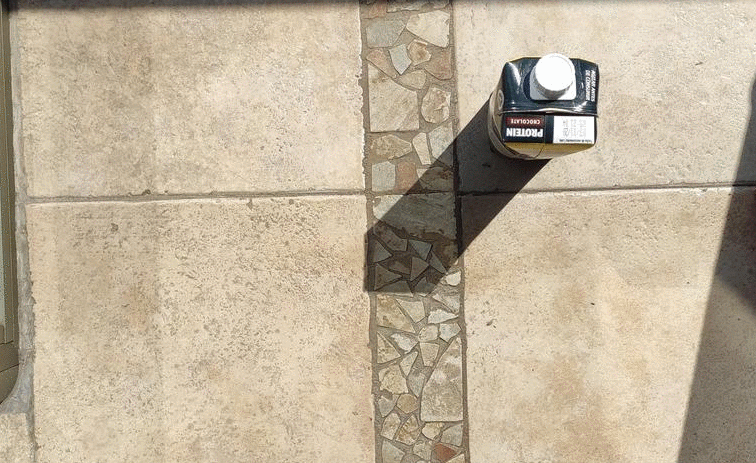

Medición 3: Equinoccio
La tercera (y última) medición que realizamos la hicimos durante el equinoccio, que este año sucedió el 22 de septiembre.
Al igual que las otras dos se hizo en la Ciudad de Buenos Aires y, gracias al Stellarium sabemos que la declinación del Sol fue de - 0º 3' (aunque la vamos a despreciar ya que una de las ventajas de medir durante el equinoccio es la posibilidad de poder asumir que la declinación del sol es despreciable) y la altura de su culminación superior fue a los 55º 27'
Durante la toma de mediciones, se presentaron varios inconvenientes que nos forzaron a mover el gnomon. Estos fueron la superposición de la sombra del gnomon con otras varias sombras pertenecientes a la estructura del balcón. Sin embargo, nosotros pudimos observar claramente que la sombra del gnomon trazó, a lo largo del día una línea recta con dirección Este-Oeste (creemos que es posible, con un poco de buena voluntad, ver esto mismo en el GIF que se encuentra debajo de todo en esta misma página)
Aquí a continuación se encuentran las imágenes (en la primera, tomada a las 9:40 y descartada luego por motivos evidentes se pueden ver las dificultades al medir) y la tabla con las mediciones y la altura del sol calculada.

Medición de las 9:40 (descartada por superposición de sombras de la estructura del balcón)

Medición de las 10:40

En las primeras 4 imágenes del GIF se ve claramente cómo la sombra describe una línea recta

A continuación se encuentra la latitud del lugar estimada a partir de la medición tomada experimentalmente en la culminación superior del Sol.
Como se puede ver, la incerteza experimental fue de 1º 25' 12'', una buena aproximación considerando las dificultades que se presentaron durante las mediciones y que los instrumentos eran, cuanto menos, poco profesionales.